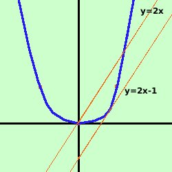

|
Data la parabola y = x2 trovare le equazioni della sua tangente parallela alla retta y = 2x. Soluzione:  prima disegniamo la parabola y = x2 e la retta y=2x. Consideriamo il fascio di rette parallelo alla retta e fra queste individuiamo la tangente facendo il sistema fascio-parabola e ponendo il delta uguale a zero considero il fascio di rette parallele alla retta y = 2x y = 2x + k Faccio il sistema fra il fascio di rette e la parabola y= x2 Sostituisco il valore della y dalla prima equazione nella seconda ed ottengo l'equazione risolvente 2x+ k = x2 x2 -2x - k = 0 questa e' l'equazione risolvente il sistema: per avere due soluzioni coincidenti devo porre il delta dell'equazione uguale a zero Ho a = 1 b = -2 c = -k 4 + 4k = 0 4k = -4 k = -1 Quindi la tangente e' y = 2x - 1 |